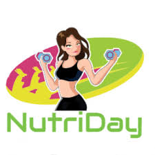

La empresa de tecnología líder en comercio electrónico y
soluciones fintech de América Latina.
Nuestro propósito es democratizar el
comercio y los servicios financieros para transformar la vida
de millones de personas en la región.
Nuestro ADN emprendedor es el eje de una empresa cuya cultura
prioriza la diversidad, la autonomía y la creatividad.
Trabajamos para que nuestros colaboradores y equipos se sientan
protagonistas de su desarrollo mientras crean una experiencia única,
centrada en el usuario.
Nuestra estructura, dinámica y abierta a los riesgos, crea un
ambiente estimulante y plural, que forma grandes líderes y logra
atraer a los mejores talentos de Latinoamérica.
Hace poco más de dos décadas, cuatro emprendedores entendimos que había
una oportunidad en la región y empezamos a amasar un sueño. Y cuando
hablábamos de una “oportunidad” no pensábamos en algo que iba a beneficiar
a unos pocos sino en una demanda insatisfecha, en una necesidad que
alguien debía primero legitimar y luego responder. Es decir, pensábamos
en muchos ganadores y en oportunidades para muchísima gente.
Hablábamos de la importancia del sector privado en el desarrollo de
productos y servicios, en la innovación, en la generación de trabajo
genuino y en la inclusión en múltiples planos. Hablábamos de abrir puertas,
de bajar barreras, de achicar la desigualdad.
Así, en 1999, mientras estudiaba en la Universidad de Stanford,
Estados Unidos, Marcos Galperin y un puñado de emprendedores
pusieron en marcha el proyecto de revolucionar el comercio en América Latina
a través de la tecnología. Así nació Mercado Libre, una empresa que ya
recorrió 21 años, opera en 18 países y llegó a cotizar en Nasdaq sin
perder nunca su corazón de start up.
Esa cultura emprendedora está en nuestro ADN y su efecto multiplicador
escribe la historia de nuestro crecimiento. Es el espíritu que impulsa
la misión de Mercado Libre, que es democratizar el comercio electrónico
y los servicios financieros en la región para transformar la vida de
millones de personas en América Latina.
Detrás de ese objetivo, a lo largo de los años fuimos desarrollando
un innovador ecosistema de soluciones integradas, asumiendo nuevos
riesgos para reducir brechas y promover el desarrollo y la inclusión
en la región.
Del marketplace al ecosistema
En 1999 nuestra empresa era un marketplace, un sitio de subastas por Internet.
No habíamos creado Mercado Pago, ni Mercado Envíos ni las demás soluciones
y herramientas que fueron enriqueciendo nuestra propuesta de valor hasta
formar el ecosistema que hoy facilita la vida de millones de personas
en toda la región, reduciendo brechas e impulsando el desarrollo.
Cuando arrancamos, esas unidades de negocio no eran siquiera ideas.
Pero aparecieron problemas, los convertimos en desafíos y generamos
soluciones. Corrimos riesgos con cada una de ellas, tuvimos aciertos
y errores, aprendimos, innovamos y logramos el impacto que inauguró
nuevos rumbos.
Actores de la transformación que se viene
Nuestra energía emprendedora nos desafía a ser protagonistas y a dar
el máximo para capturar las mejores oportunidades. Estamos fuertemente
comprometidos con las comunidades de los países donde operamos y
queremos ser el motor de la recuperación y el crecimiento post pandemia.
Más de dos décadas de crecimiento refuerzan nuestra confianza pero
estamos convencidos de que la historia recién comienza. Lo mejor
está llegando y vamos a estar ahí para crearlo.